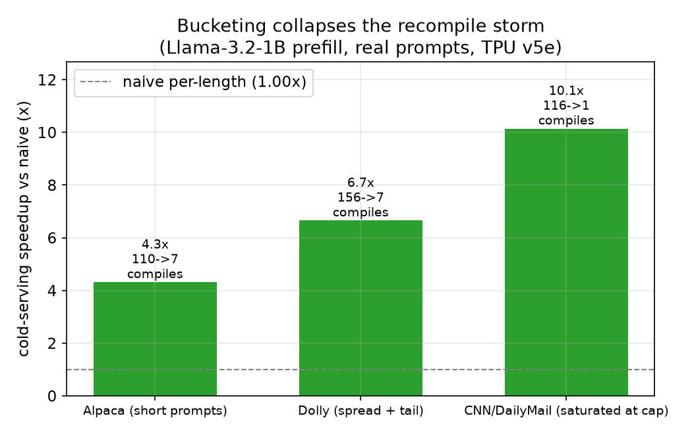
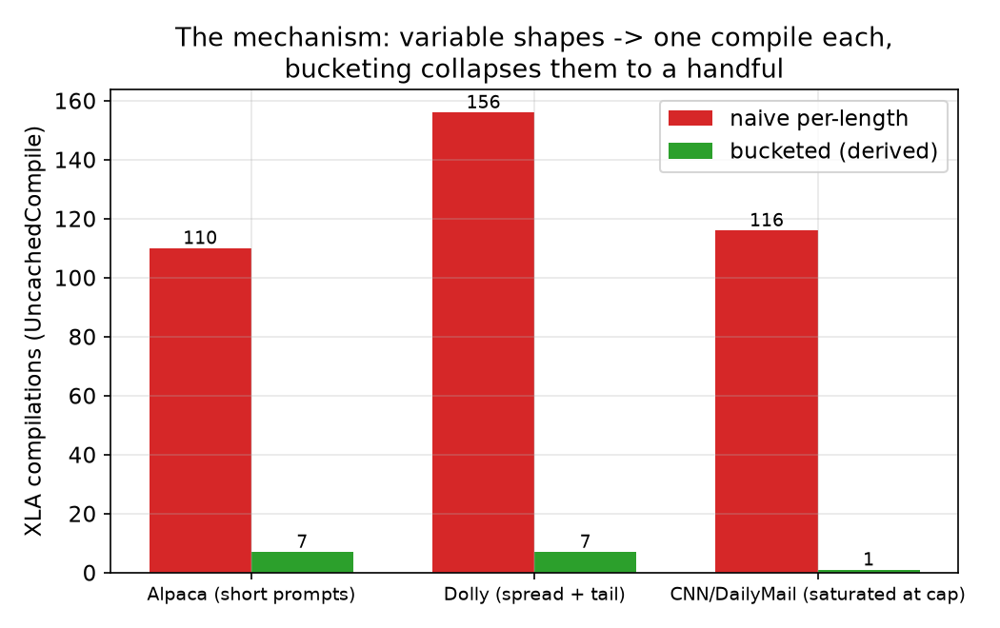
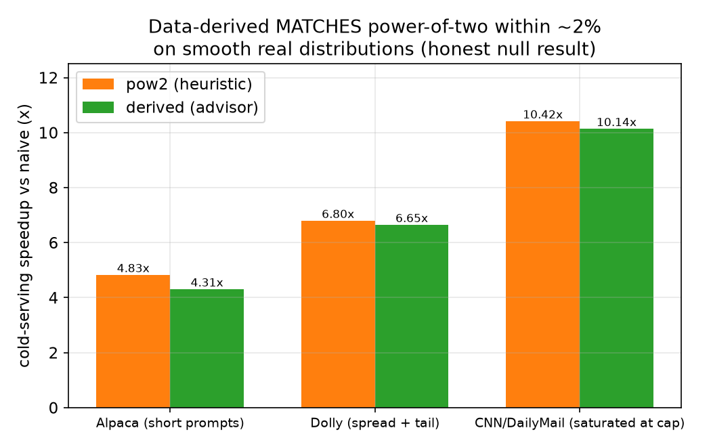
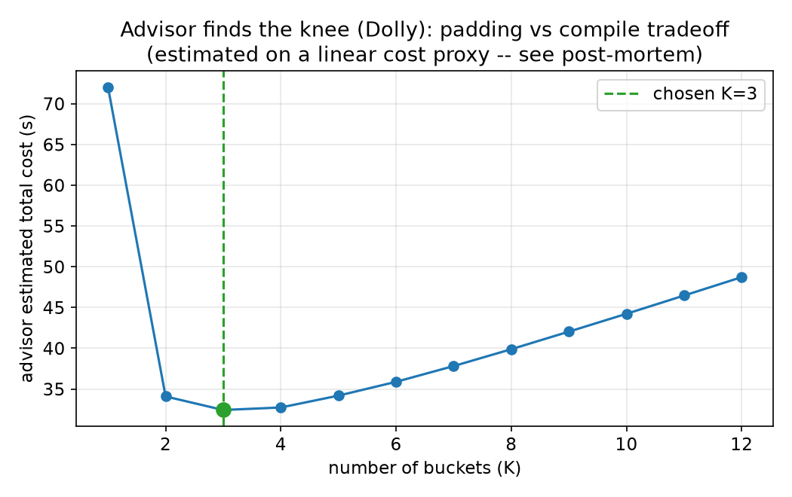

A measured study of XLA recompilation on a real TPU — including the part where my own hypothesis didn't survive contact with the data.
The short version: on a real TPU, collapsing the recompile storm with bucketing is a 4–10× win for variable-length LLM prefill — I measured up to 156 compilations dropping to 7. The longer, more honest version: I hypothesized that data-derived buckets would beat the power-of-two heuristic. Across three real prompt distributions, they matched it within ~2% rather than beating it — and I think understanding why is the more interesting result.
XLA recompiles whenever an input shape changes. For LLM serving, every distinct prompt length is a distinct shape, so a stream of variable-length prompts pays a recompile storm. The standard fix is bucketing: pad each prompt up to one of a small set of sizes so only those few shapes ever reach the compiler. This is exactly the bounded dynamism problem on TorchTPU's roadmap.
The open question is which buckets. Powers of two
(32, 64, 128…) are the default reflex, but they're a guess, blind to
the workload. My thesis: the bucket set should be derived from the
empirical length distribution and the measured compile cost, with an
optimizer choosing the set — and the number of buckets — that minimizes
real wall-time.
A bucket advisor, all pure and CPU-testable, plus a serving benchmark:
t(len) ≈ a·len + b·len² by least squares.Σ countᵢ·cost(cap(i)) — the padded compute bill.K · compile_cost, choose K at the
knee of the total-cost curve.
The benchmark then serves a stream of real prompt lengths three ways — exact
(pad each to its own length), pow2 (the heuristic), and
derived (the advisor) — and measures wall-time and compilations on the
live TPU.
UncachedCompile
counter (not CompileTime, which is a time metric).Bucketing at all is the headline. Naive per-length padding triggers one compile per distinct length; bucketing collapses that to a handful, and the wall-time follows:


| Dataset (regime) | naive | pow2 | derived | compiles (naive→derived) |
|---|---|---|---|---|
| Alpaca (short) | 1.00× | 4.83× | 4.31× | 110 → 7 |
| Dolly (spread + tail) | 1.00× | 6.80× | 6.65× | 156 → 7 |
| CNN/DM (saturated) | 1.00× | 10.42× | 10.14× | 116 → 1 |
I expected derived to beat pow2. It didn't. Across all
three real distributions, data-derived matched the power-of-two heuristic
within ~2% — and pow2 was marginally ahead each time.

I resisted the temptation to keep swapping datasets until one made my thesis look good — that would be p-hacking. Three real distributions is a robust enough answer: for smooth real LLM prompt lengths, which sensible bucket scheme you pick barely matters; bucketing at all is what counts.
This isn't a bug; it's informative. Look at Dolly: derived takes
fewer compiles (7 vs 9) but more padding (1.30× vs
1.21×). The fitted cost model comes out linear every run
(b ≈ 0 at these lengths), so it under-penalizes padding and the DP
over-trades padding for fewer compiles. pow2's tighter packing saves more compute
than its two extra compiles cost — so it wins by ~2%. A padded-token-weighted
(quadratic) cost would close the gap; even then, the advisor would match
pow2 on smooth distributions, not beat it.

The advisor's value isn't beating pow2 on a benchmark — it's that it derives the bucket set and the bucket count automatically, instead of relying on the pow2 grid happening to fit. It also tells you when you don't need it: on CNN/DM, where articles saturate the length cap, it correctly collapses to K=1. The regimes where it would diverge from pow2 are distributions with dense clusters sitting just above a power of two (where pow2 over-pads) — a real, falsifiable prediction the cost model makes.
Recompilation is the documented performance cliff for dynamic PyTorch/XLA workloads, and bounded dynamism is the roadmap answer. This study is a small, concrete, measured instance: it quantifies the cliff on a real TPU (156 → 7 compiles, ~6.7×), shows that a simple heuristic already captures most of the bounded-dynamism win, and is honest about the limits of a learned bucket optimizer. The whole pipeline — advisor, DP, cost fit, padding-correctness — runs and is tested on CPU; only the headline numbers need the TPU.
# CPU: advisor, DP, cost-fit, padding-correctness — all testable without a TPU
uv run pytest
uv run python -m benchmarks.llm_prefill_serving --dry-run
# TPU (Colab or Kaggle): run notebooks/llm_serving_tpu.ipynb top to bottom,
# switching DATASET in {alpaca, dolly, cnn}; then update results/measured_tpu.json
uv run python scripts/render_report.py # regenerate these charts